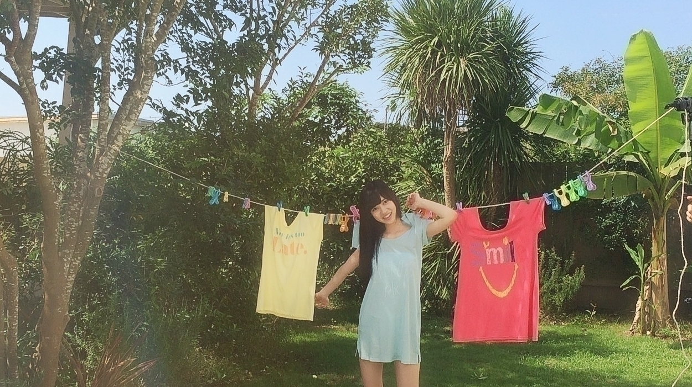
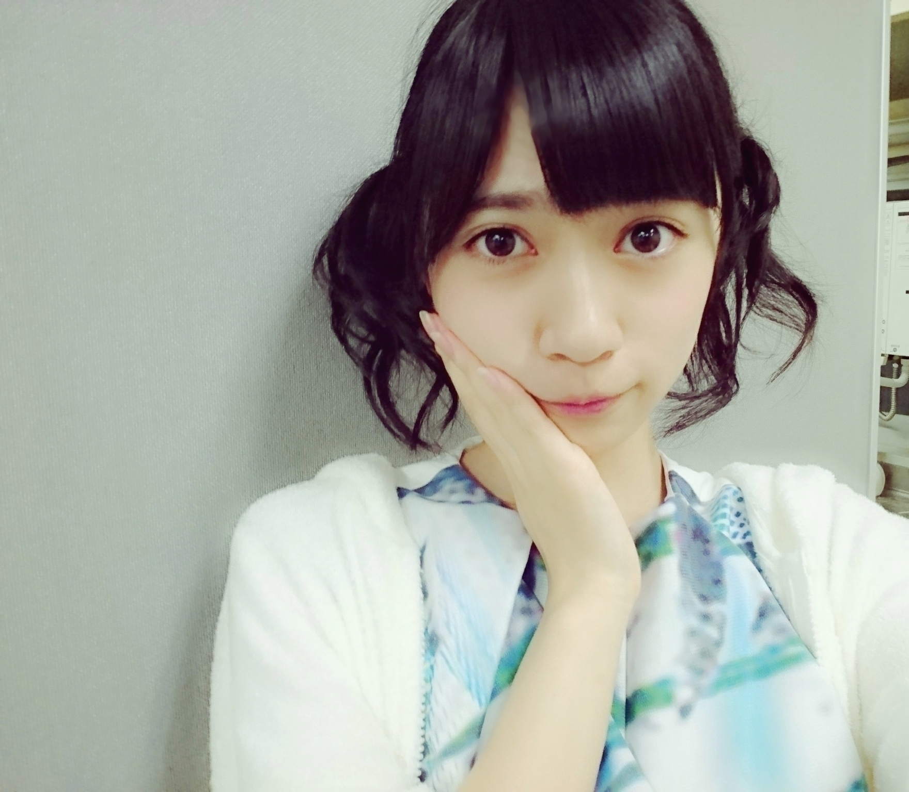
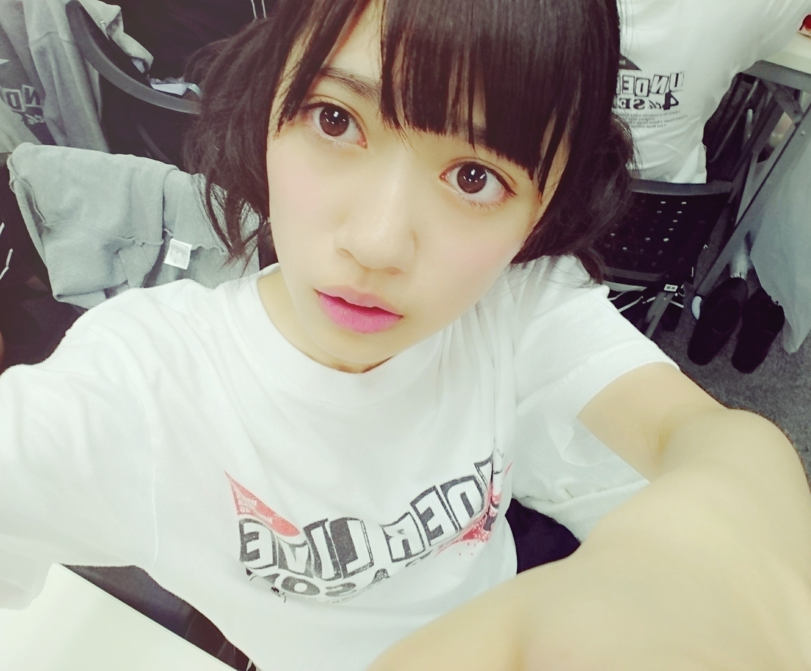
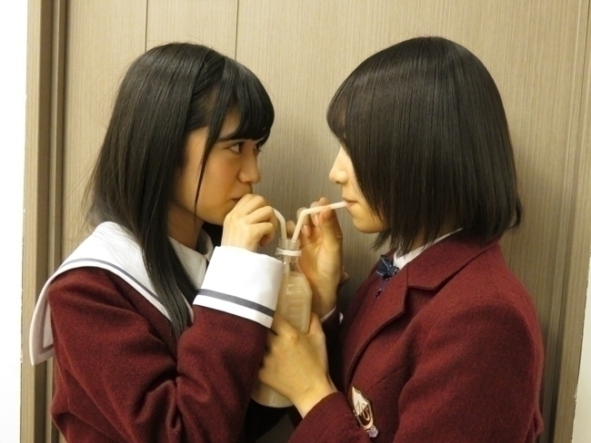
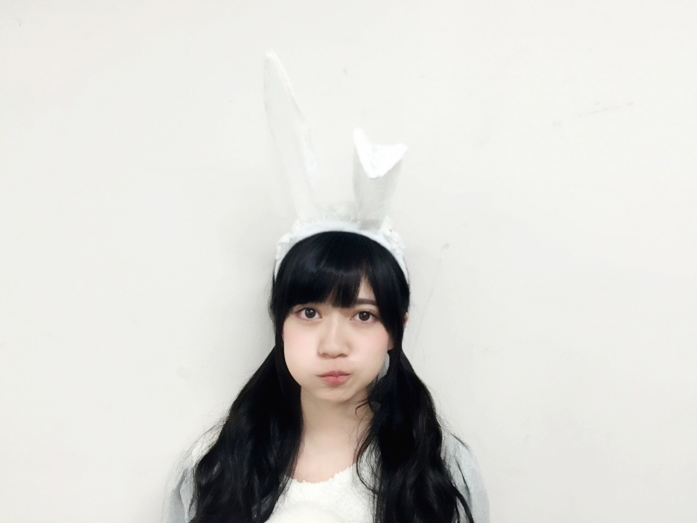

2015/1029Thu☺このマークにハマってます 寺田蘭世です
干されてきました:-)

干されてます
洗濯物の1つになっちゃいました
以前のＵＴＢさんでは
吊るされてました
そういう星の下にうまれたと確信した寺田蘭世で
ありました
自分的には
こういう設定好きなので
嬉しいです:-)
おはようございます
こんにちは
こんばんは:-)
寺田蘭世です
最近は寒いですね
でもこの寒さ嫌いじゃないです暑い日より寒い日の方が私は好きです。
皆さんはどっち派ですか
夏派冬派
早くマフラーに埋もれたい
そしてモコモココート着て
1人でイルミネーション
探ししたい！
今年の冬やってみたい事
冬の夢は
外国でよく見る
大きなクリスマスツリーの周りにプレゼント沢山っていうのを体験してみたい:-)
綺麗に包装された小さな箱、大きな箱のプレゼントをビリビリあけたいビリビリ楽しそうもう子供みたいに夢中になっちゃいそう:-)
これが17歳冬の夢です！！
質問返し○
○元気ですかー？(´∇｀)
→はい、元気ですよ
コメントありがとうございます
○らんぜちゃん
こんにちは！初めて投稿させて頂きます。
らんぜちゃんはすごく心の芯がしっかりしていて、らんぜちゃんと年が変わらない姉がいる私ですがなんでこんなに大人っぽくてしっかりしているんだろう
！と思って、憧れています。
らんぜちゃんは何故かすごく惹かれるし、ダンスも上手い！というよりはつい見てしまう。っていう感じで、乃木中の"嫉妬の権利"のダンスもすごく惹かれるものがありました！
私はCDを買ったりテレビを見たり、ラジオを聴いたりするだけで、まだ直接会えていないのが残念です（；＿；）
今年中3で受験なので来年は必ず行きます！待っててね
今の私は間接的な応援しかできないけど応援してます！これからも頑張ってください！
→初コメントありがとうございます！
恥ずかしいくらい褒めてくれてありがとう
こういう言葉をもらう度
もっと頑張らなきゃって
思えます:-)
受験頑張ってね！
どんな応援の形でもいいんです
直接じゃなくても
伝わるし力になってますよ！
○とりあえずアンダラお疲れ様でした！！やっぱりパフォーマンスしてるらんぜも好きです！武道館に繋がるLIVEが出来たと思います。嫉妬の権利真っ赤に染めたい...武道館は2日とも行かせてもらいます。今からでも楽しみです。
→ありがとうございます！
今回のアンダーLIVEで決めた「嫉妬の権利」のときは
赤色サイリウム
自分のサイリウムカラーも赤白で
赤が好きなのでより一層嬉しいです
武道館では
また何かを得て納得の行くものにしたい
どういうメンバーで
どういう内容、楽曲をやるのか私達もまだわからないけど
自分にとってプラスになる
武道館にしたいです
アンダーライブ○

お気に入りのLIVEヘアー
全１２公演終わりました
今回は秋をテーマに
しっとりと初恋の人を今でも からスタート
前回はnonstopLIVEという事でとても熱くて激しい
LIVEでしたが
今回はダンスパートもありましたが割と激しいというよりしなやかさを大切にしました
アンコールの太陽ノック以外は全て
アンダー曲でした
１８公演に挑戦したり
nonstopLIVEに挑戦したり
色々、挑戦してきましたが
今回はまさに原点に戻ったって感じですかね！？
そして、もう１つのテーマはＭＣ力をつけようでした
私自身本当はお喋り大好きです。
でもＭＣで出番をいただく事自体今まで早々なかったですし、私が喋ったって
いいのだろうかとか
不快に思われたらどうしようとか色々考えてしまい前まではトークに参加できませんでした。
ですが、今回のアンダーLIVEで私が出せるようになってきました。
何より先輩方と勝手ながら
仲良くなれたかなって
思ってます:-)
ＭＣでお世話になった
らりんさん
らりんさんには直接
ご連絡させて頂きましたが
本当にありがとうございました♬
今まで永島さんって
呼んでたんですが
このアンダーLIVE中に
いつの間にからりんさんって呼ぶようになりました！
LIVE中キスしてくれるまでの仲になりましたよ笑
私のファーストキスは
らりんさんでした、、、！
ほっぺたですが
らりんさんが大好きになりました
川村さんには
らんぜが夢の中に出てきたーっと言われ
その内容を聞いたら
喧嘩してたらしんですが
夢占いで検索したら
逆夢と言い
逆でその相手と仲良くなれるっと書いてありました
凄く嬉しいです♬
あと、川村さんは
私のお洋服好きーって言って下さったり
ちなみにサイリュウムカラーも赤白でお揃いなんです
趣味が合うのかななんて:-)
12345ろってぃー！！！
いつかのブログの題名にもしました
エンジェルまあやこと
まあやさん
まあやさんは私の癒やしです
まあやさんを見てると
元気がでるんです。笑
アンダーLIVE期間も
まあやさんをみて
沢山癒やされました
能條さんはユニットコーナーの私のために誰かのためにで一緒に歌うパートがあって沢山練習に付き合ってもらいました
舞台頑張ってください！！
他にもレッスン期間を
含めると沢山の出来事があって皆で支えあう事が出来ました
LIVEを観に来てくださった方が今回のLIVEでは本当に皆が仲良しであたたかい雰囲気が客席にまで伝わりましたってコメントが多く
これってすごく良いことだなーって:-)
無事、12公演終えられて
よかったです
アンダーLIVEに関わって下さったすべての皆様
ありがとうございました！

13枚目シングル○
大人への近道のMVでは
私は後輩役です
だから、皆に敬語なんです
私だけ凄い1年生感出てますよね
このMV撮影は凄く
良い経験になりました
演技難しいなー。
嫉妬の権利
嫉妬の連鎖です
I ℒℴνℯ日奈子です
でも、本当の世界でも
あいらぶ北野氏なんです、、、:-)
恥ずかしいから言わないけど
ラブラブストローしました恥ずかし過ぎて目見れなかったです。照

キョロキョロしちゃった
個人PV
普段本を声にして読まない上に内容も難しく深い
本でした。
カミュの本は1回本屋さんで手にとってみたことはあったのですが開始3ページで
内容が難しく
諦めた思い出があったのですが
今回まさかこんな形で
カミュの本に関わるとは！！
この本を読むって決まった時びっくりしました
お知らせ○
10月 29日週刊ヤングジャンプ
10月 31日BUBKA
ソログラビアです
人生3回目ソロです！
全身筋肉痛になりました
痛くて自分でお洋服着るのも一苦労です。
ジャケット羽織るときの
腕の痛さは今までで
1番酷い筋肉痛です。
助けてください
手伝って、、、
こんなに動いたの初めて
っという体験をしてきました
お楽しみに:-)
お買い物したい
どこか行った事ない街に
行ってみたい
あと、冬物を買わないと
コートとか新しいセーター買わないと！
冬を迎えられない
今年こそ手袋とマフラーが欲しい
毎年雪だるま作る際
手袋が無い為
素手でお湯に手を突っ込んで雪を触るという
テラダ家のルール、、、笑

ハロウィンもまだ終わっていないことに気づき
よくわかりませんが安心しました。
ハロウィンで仮装してる人を見て改めて仮装と言うか
コスプレしたくなってきました
前からモバメでは
言ってたのですが
メイド服をいつか着てみたい！
恥ずかしいけど
フリフリしてて可愛いし
せっかく、アイドルになったのですから特権で
メイド服は挑戦してみたい
ですね！
っという事で
決めました:-)
11月29日幕張メッセは
メイド服着ようかなーって
11月も頑張ろう:-)
2015/10/29 22:49


コメント(1020)
がんばろうねっ！
3日握手いくねっ！
もうすぐ握手会やなぁ(笑）
楽しみにしてます！
やぁ！
これ使ってみてねー
アンダラの時の髪型ってどうしてるの？
良かったらやり方教えてほしいですヽ(｡•ω•｡)ﾉ♩
長文モバメ見たよ！ほんと応援してる！
らんぜの勢い止まらんぜ！！
その絵文字いいよね！
アンダラいけないけど…。いきたいなぁ。
体調にはきをつけて！
色々悩んでるかもしれないけど
頑張ってる蘭世が大好きです。
ずっと上を目指してほしいです。
ほんと蘭世に影響受けて
俺も頑張らなくちゃって思う！
蘭世の勢い止まらんぜ！！！！
ゆーより:-)
干されてる蘭世も可愛い^_^
自分は(￣▽￣)←これにはまってる(￣▽￣)
アンダーLIVEお疲れ様^_^
行きたかったけど、大学があって行けなかったから、また何かしらのイベントに行くねp(^_^)q
大人への近道、嫉妬の権利めっちゃ好きで、ずっと聴いてる(￣▽￣)
寒くなってるから体調に気をつけてね^_^
じゃ*･゜ﾟ･*:.｡..｡.:*･'(*ﾟ▽ﾟ*)'･*:.｡. .｡.:*･゜ﾟ･*
その時はどんな服装ですか？
そのときも仮装？してほしいです！
見てたんだけど、
蘭世がずっとこっち見て笑いながら
歌ってくれて(多分)
完全に釣られたよね〜。（笑）
武道館は行けないけど楽しんできてね☺️☺️
髪型似合いすぎ！！可愛すぎ！！！
生で見たい(T_T)
はやく3日になれ！！
くるちゅん。
大人への近道すごい好きになりました！！
始まりのメロディラインが好きです☺️
サンクエトワールでライブとかあったらいいなー
できれば１１月３日は無理かなー？笑
アンダーライブお疲れ様でした。
ソロでのグラビアも増えてきてファンとして
嬉しいよ！
前２期生全員出演した回と比べて明らかに違ったと感じたこと
１期生、２期生の悪い意味での壁が無くなってきてること。
一体感が見て取れたこと。
その分トークや表情にも余裕があって見てるほうも前より全然楽しめました。
自分は断然冬派です！
夏の暑いのは苦手です。溶けますｗ唯一花火大会は大好きですがぼっちなので・・・
冬の空気がとても好きです。深呼吸したらすごく季節感を感じれて最高です。
一昨日の生ドルは神回だった。プレミアム入ってればよかった。蘭世かわいすぎた。お人形さんかな？
昨日のモバメとこのブログで蘭世の熱さが伝わってきましたわ！！！うん。ずぇってぇセンターなってほしいな。
武道館アンダラ楽しみすぎて！！！
蘭世うちわ作ろーかな？笑
僕は来年の公務員試験に向けて勉強しなきゃなんだけど最近捗らなくて辛い...
でも蘭世が頑張ってるの見たらぼくも頑張らなきゃなぁと励まされるかな
ありがとう！！
蘭世大好き！！
またね。
夏派かな〜
冬は寒いから苦手です。
CD買ったららんぜちゃんの生写真入ってました〜
こんにちは
こんばんは
KICKNと言います(^^)
読みはきっくんでよろしくm(._.)m
干された蘭世可愛すぎです！
23日のアンダラで最前列の一番下手で赤白ペンライト振ってました！何回か目が合ったけど覚えてないよね？
ってことで握手会に行ってまたお話したいなって思います。
3日は行けないから、29日ね(*^o^*)
個人PVもMVもまだ見てないから、明日見るね！！
長文モバメは読んでて泣いちゃいました(｡-_-｡)
もちろん応募してるし、一緒に頑張ろうね！！
今までも、そしてこれからも、蘭世の勢い、止まらんぜだよ！！
メイド服、楽しみにしてます(*^o^*)
ではでは(＾ｰ^)ノ
サンクエトワールも応援しています。
お疲れさまです。
筋肉痛になるほど動いたお仕事…
気になるね。笑
筋肉痛には、意外と栄養が大事みたい！
栄養バランスと、睡眠をしっかりとることで治りやすくなるみたいだよ！
昨日は生ドルお疲れさまでした。
蘭世カメラ上手…うん、上手だったよ！！笑
さっきは熱いメールありがとう。
熱い気持ちに応えられるよう、13thも頑張ります！
今日はもうおやすみかな？？笑
またコメントします♪
一曲一曲表情が違うからびっくりしました。
蘭世ばっかり見ちゃってごめんなさい。
素敵な1日の思い出になりました。
今度個別初めて行きます。よろしくお願いします
小さな可愛いな蘭世＼(^o^)／
生ドルも凄く可愛かった
お疲れ様でした
今後も頑張って
-ドイツからのファンより
個人PVでの朗読、最後までサジを投げる事なく
やり遂げた感じが伝わったよ。
大人への近道のMV、
らんぜがはぐれてからみんなに合流するまでの
期間が特にかわいかった(*^^*)
･･･らんぜのやりたい事、叶うといいね(^^)
それじゃ、お仕事行ってきます(^_^)ゞ
干されてるらんぜめっちゃ可愛かった♡
いやー、アンダラ、よかったです！！！
3rdに比べたら不完全燃焼感がでちゃうのかなぁって思ったけど
メンバーの素の姿が見れて楽しかったし、なんか嬉しかった！
でも、やっぱもっとみんながどんどん話せたらいいなぁとも思った…！！
パフォーマンスとしてはやっぱりナカダカナさんはもちろん、きいちゃんらんぜも惹きつけられたよ
らんぜは自分の魅せ方が分かってるなぁと
うんうん。頑張れ！まだいけるよ！！ごめんね、上からになるけど
あと、もう、永島聖羅さんと仲良くなれたみたいで
めちゃくちゃ嬉しいです♡
らりんさんのことこれからもよろしくお願いします(._.)
武道館でもどんどんちゅーしちゃってください(._.)♡
24夜、25昼夜最前で観させて貰いました
個人的にMCのらんぜちゃんが光ってました！
今までのアンダーliveでは観たことの無いトークの内容や間の付け方、1期生との対応、表情…
どれをとってもレベルアップしてた気がします！
liveではフロントに立つ事もあったけど凄く凛々しさを感じたよ～(*´ー｀*)
自分の中で1期生と2期生の壁が無くなって対等にMCしたりパフォーマンスしたりってのが良かったなぁ…って思ってる
皆で作り上げてる感じが出てて今回のアンダーliveも見所満載で楽しめました(o^∀^o)
らりんとの接点も裏ではあったんだね
裏話ありがとう
今回のアンダーlive観て益々武道館が楽しみになってきたよ
集大成期待してます！
改めてお疲れ様～
アンダーlive大好き(о´∀`о)
今日もお仕事お疲れ様です！
忙しいのにメールありがとう♪
特に今日はたくさんメール来て
凄く嬉しかったです！
いつも本当にありがとう♪
よしより
お久しぶりです。
らりんさん蘭世のファーストキス奪えるなんて羨ましいな…
ジャケット着るときは手伝いますよ笑
お助けしますよ！笑
幕張でメイドだと…
行きたい行きたいぞよ
らんぜに会いたい今日この頃！
体調崩さないようファイトー！！
うまいやん
メイド服みたいなぁ•••
私は汗かきなので夏が苦手です。
１７歳は夢があっていいな～
アンダーライブお疲れ様でした。
少しづつ成長してるんだね。
13枚目シングルオリコンデイリーチャート１位おめでとう
個人PV素敵でしたよ。
蘭世ちゃんのメイド服も楽しみにしてますよ
らんぜー。
今さらだけどアンダラ行ったよー。
最終日の前日。
終始らんぜのことを目で追ってたよ(^ ^)
レスもいっぱいくれて嬉しかった！
武道館2日間とも行くから
頑張ってね‼︎
嫉妬の権利も大人への近道も
いっぱい聞くね〜。
3日の握手会行きます！
楽しみです！
じゃあねー
らんぜちゃーん！
アンダーライブおつかれ(o^^o)
11月3日久しぶりに会いに行くよ♪
できればそのときメイド服姿みたいなー笑
武道館は2日とも当たったからよしとするけどね☺
あ☺この顔文字早速スマホに登録したで
意味もなく使いまくるね←
わいも毎年雪だるまを作るのが恒例になってるで！
ただ自分の場合は素手であえて素手で戦うのが自分ルール
手が動かなくて家のドア開けられなくなるからオススメはしない←
コメントする